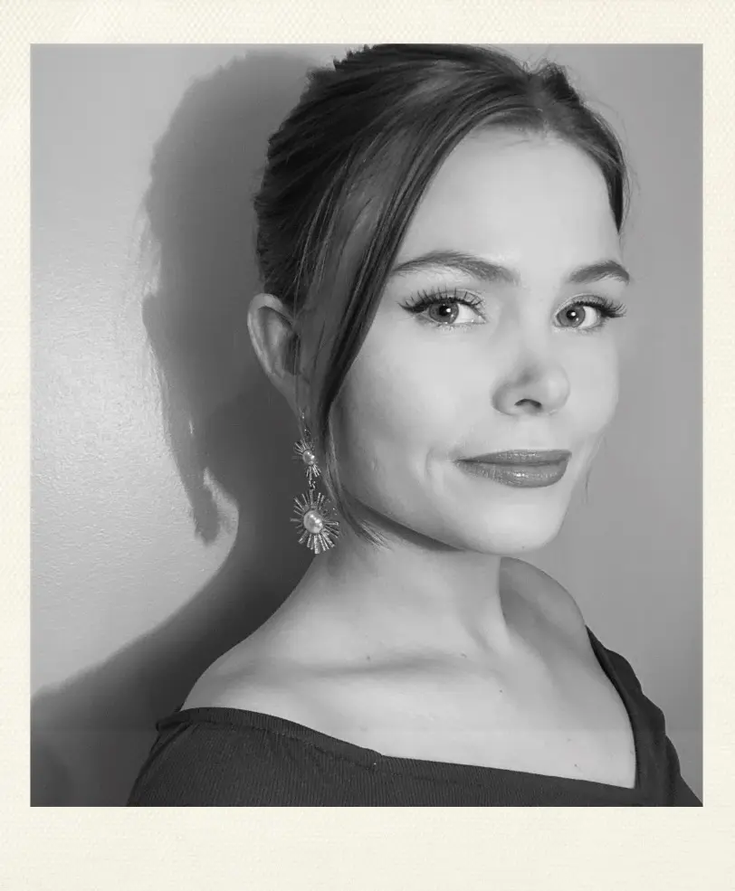

OM MIG
Jeg hedder Íris Reynisdóttir og jeg er 27 år gammel. Jeg er født og opvokset i Island. Jeg studerede på European Film College i Ebeltoft fra 2021-2022. Og bagefter besluttede jeg mig at flytte til København og har boet her siden oktober 2022. Jeg har altid været en kreativ person og jeg har mange interesser inden for den kreativ område. Jeg interesser mig meget til film, film klipning, at male, tegne og skrive. Men derfor søgte jeg ind på Multimediedesign i KEA fordi det er en kreativ uddannelse. Jeg vil beskrive mig selv som meget nysgerrig og ambitiøs person. Og derfor kan jeg godt lide hvor kreativ og krævende opgaverne er på uddannelsen og også hvor mange forskellige tinge vi laver.
